JENIS BIJI KOPI
Temukan Segala Tentang Dunia Kopi di Rumah Kedua Anda
Jenis Biji Kopi
Arabika, Robusta, Liberika, dan Excelsa beserta karakteristiknya.
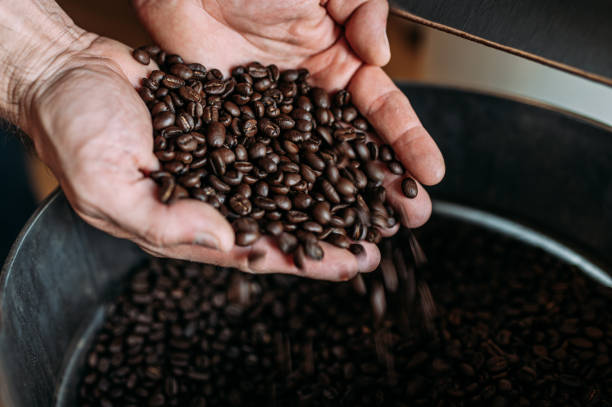
Arabica
Biji kopi premium dengan rasa asam yang seimbang, aroma floral, dan kompleksitas tinggi. Tumbuh di ketinggian tinggi.
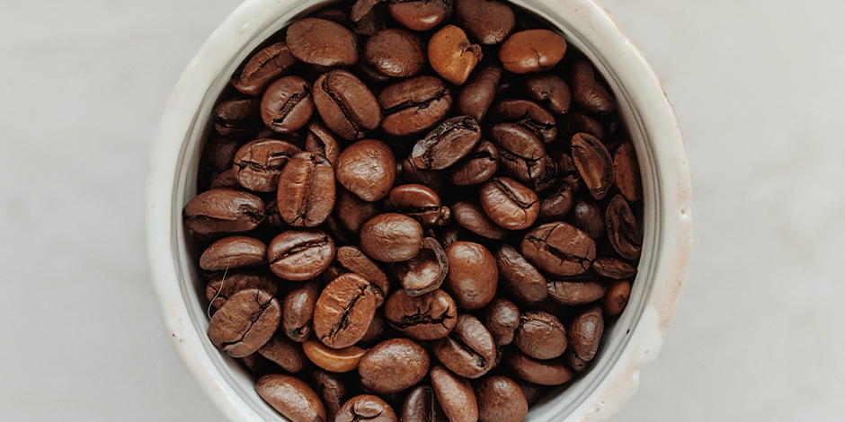
Robusta
Biji kopi yang lebih kuat, pahit, dengan kadar kafein tinggi. Digunakan dalam espresso blends dan instant coffee.
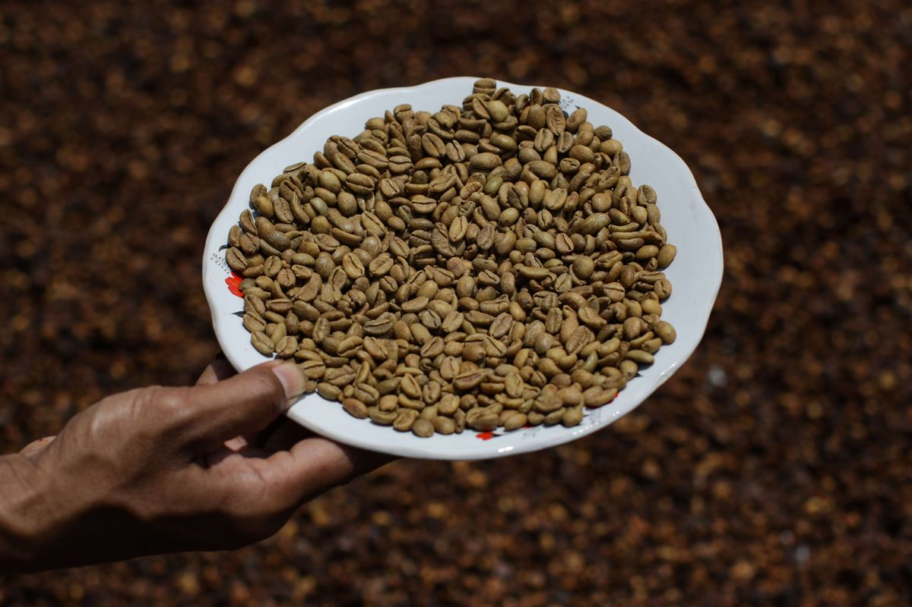
Liberica
Biji kopi langka dengan rasa smoky dan fruity, tahan penyakit, populer di Asia Tenggara termasuk Indonesia.
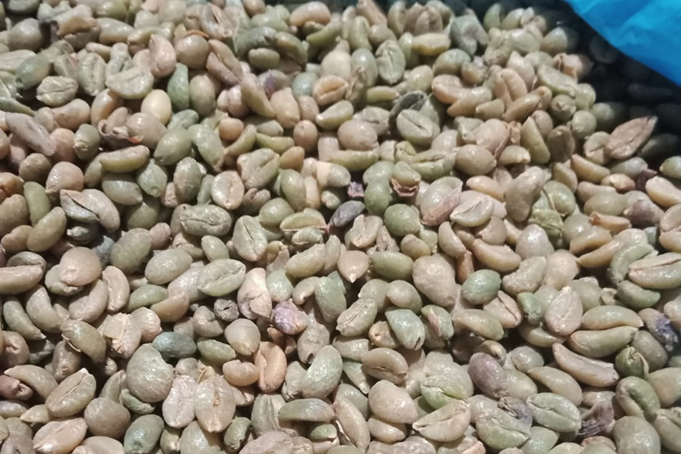
Excelsa
Varian Liberica dengan rasa tart dan dark chocolate, menambahkan kompleksitas pada blends kopi.
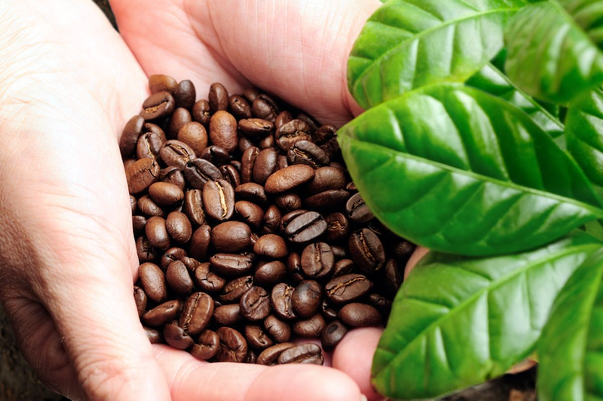
Kopi Gayo
Kopi Arabika asli Indonesia dari Aceh dengan rasa seimbang, asamitas sedang, dan aroma floral yang kuat. Salah satu kopi terbaik dunia.
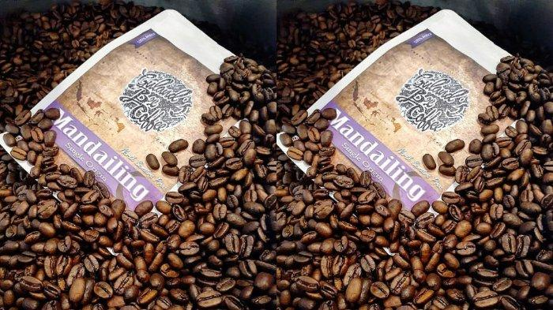
Kopi Mandailing
Kopi Arabika dari Sumatera Utara dengan body penuh, rasa cokelat, dan aftertaste panjang. Dikenal dengan kompleksitas rasanya.
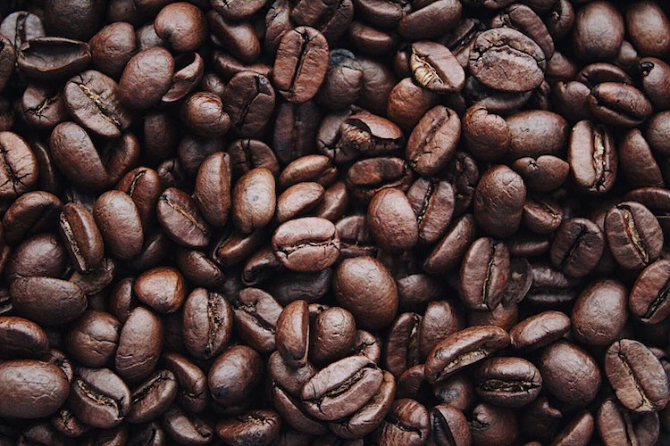
Kopi Toraja
Kopi Arabika dari Sulawesi Selatan dengan rasa fruity, asamitas cerah, dan aroma floral. Memiliki kompleksitas tinggi dan aftertaste bersih.
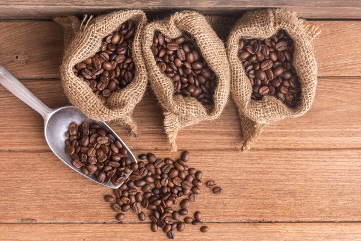
Kopi Java
Kopi Arabika dari Jawa dengan rasa balanced, aroma rempah, dan kompleksitas tinggi. Salah satu kopi tertua di Indonesia.
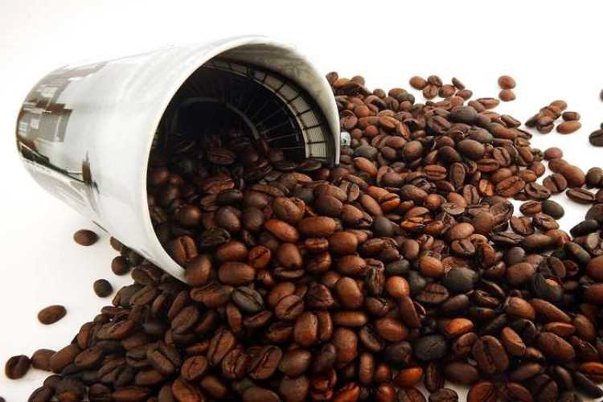
Kopi Flores Bajawa
Kopi Arabika dari Flores dengan rasa fruity, asamitas tinggi, dan aroma floral yang kuat. Memiliki karakteristik unik dari tanah vulkanik.
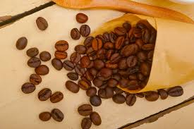
Kopi Kintamani
Kopi Arabika dari Bali dengan rasa fruity, asamitas cerah, dan kompleksitas tinggi. Tumbuh di dataran tinggi dengan tanah vulkanik.
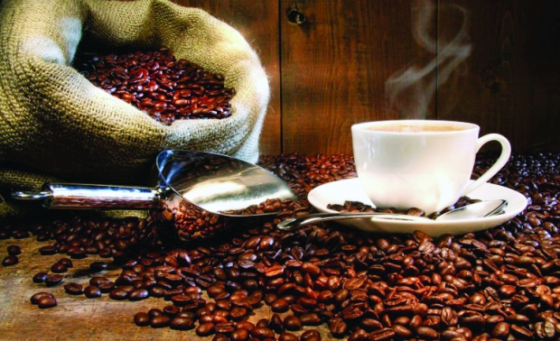
Kopi Ijen Raung
Kopi Arabika dari Jawa Timur dengan rasa balanced, aroma rempah, dan aftertaste panjang. Tumbuh di sekitar Gunung Raung.
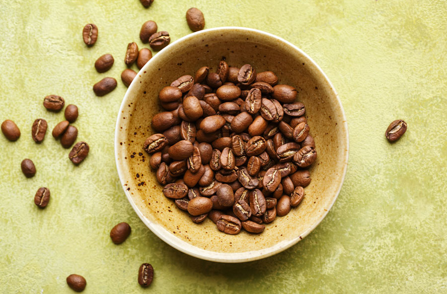
Kopi Wamena
Kopi Arabika dari Papua dengan rasa fruity, asamitas tinggi, dan kompleksitas tinggi. Memiliki karakteristik unik dari dataran tinggi Papua.
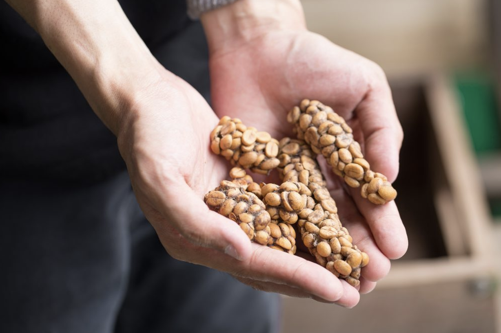
Kopi Luwak
Kopi premium dari biji yang dicerna luwak, menghasilkan rasa unik dengan catatan fruity dan rendah kafein. Salah satu kopi termahal dunia.